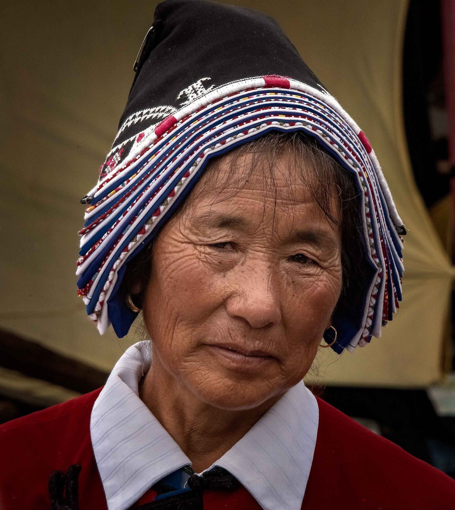
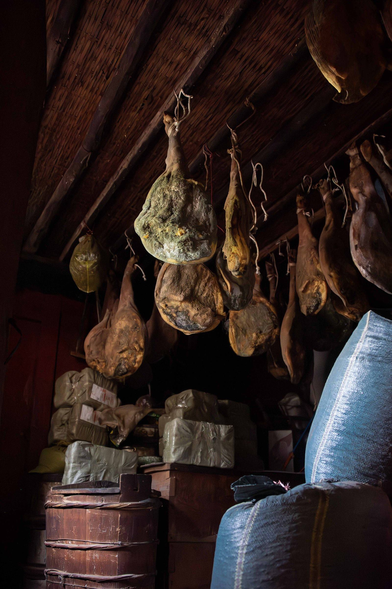

Hall IV · The Bai of Jiǔhé
白族九河乡 · 丽江—剑川通道上的蓝白世界
蓝白挑花
头巾 · 工匠 · 家园
九河多层头巾 蓝底白线挑花
流行于剑川三河、丽江九河等地的白族妇女头巾：以蓝底白线挑花（与常见彩线挑花相反，朴素明快），并以头巾层数区别长幼——女童单层红线，年长者层数渐多。九河白族妇女头巾是丽江民族服饰中的独一支。
白族调 白曲
山歌类民歌，常冠以地名（大理白族调、剑川白族调）；九河毗邻剑川，当地白族调深受剑川风格影响。
<
三道茶 Ⅹ-107 · 大理
一苦二甜三回味，起源可追至南诏——唐樊绰《蛮书》已记白族先民「以椒、姜、桂和烹而饮之」；徐霞客在大理被以三道茶招待，记为「注茶为玩，初清茶，中盐茶，次蜜茶」。2014 年列入国家级非遗（大理市申报，2022 年随「中国传统制茶技艺」入选人类非遗）。申报地在大理，本馆如实标注。来源：中国非物质文化遗产网 15248。
反哺丽江城的工匠 木石双绝
据杨福泉研究，剑川与九河白族的木雕、石雕技艺长期在纳西族地区享有盛誉——丽江城镇农村普遍流行的「三坊一照壁」「四合五天井」砖木瓦房，与白族工匠的影响密切相关。白族匠人，是丽江古城建筑美学背后的一支手。
民居与饮食
「三坊一照壁、四合五天井」的院落格局；尚白：男子白对襟衣配黑领褂。待客倒茶只倒半杯（「酒满敬人，茶满欺人」），倒酒须满。
<
族称与方块白文 白子 · 民家
白族自称「白子」「白尼」「白伙」，他称民家、那马、勒墨等六十余种；1956 年 11 月依本民族意愿统一族称「白族」。参照汉字创制的方块白文，现存文献以大本曲曲本、碑刻、经卷为主——九河的白曲，正是这套书写传统活着的旁支。来源：人民日报海外版（2017）。
 白族妇女Rod Waddington / CC BY-SA 2.0 / Wikimedia Commons
白族妇女Rod Waddington / CC BY-SA 2.0 / Wikimedia Commons

头饰Rod Waddington / CC BY-SA 2.0 / Wikimedia Commons
 长者Rod Waddington / CC BY-SA 2.0 / Wikimedia Commons
长者Rod Waddington / CC BY-SA 2.0 / Wikimedia Commons

冬日人家Rod Waddington / CC BY-SA 2.0 / Wikimedia Commons
注：以上人像摄于滇西北白族社区（Commons 开放影像，未逐一标注具体村镇）。